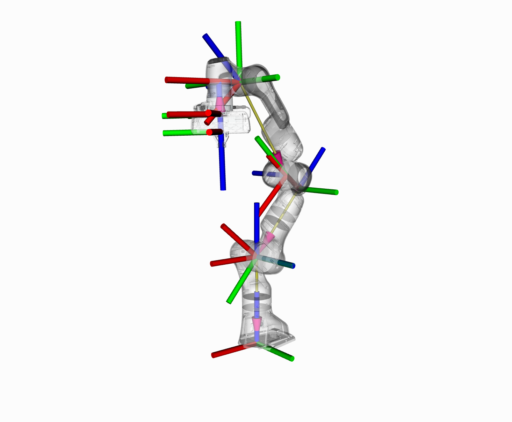

Robot Model and Robot State
{kind=link}
In this section, we will walk you through the C++ API for using kinematics in MoveIt.
The RobotModel and RobotState Classes
The RobotModel and RobotState classes are the core classes that give you access to a robot’s kinematics.
The RobotModel class contains the relationships between all links and joints including their joint limit properties as loaded from the URDF. The RobotModel also separates the robot’s links and joints into planning groups defined in the SRDF. A separate tutorial on the URDF and SRDF can be found here: URDF and SRDF Tutorial
The RobotState contains information about the robot at a certain point in time, storing vectors of joint positions and optionally velocities and accelerations. This information can be used to obtain kinematic information about the robot that depends on its current state, such as the Jacobian of an end effector.
RobotState also contains helper functions for setting the arm location based on the end effector location (Cartesian pose) and for computing Cartesian trajectories.
In this example, we will walk through the process of using these classes with the Panda.
Getting Started
If you haven’t already done so, make sure you’ve completed the steps in Getting Started.
Running the Code
All the code in this tutorial can be compiled and run from the
moveit2_tutorials package that you have as part of your MoveIt
setup.
Roslaunch the launch file to run the code directly from moveit2_tutorials:
ros2 launch moveit2_tutorials robot_model_and_robot_state_tutorial.launch.py
Expected Output
The expected output will be in the following form. The numbers will not match since we are using random joint values:
... [robot_model_and_state_tutorial]: Model frame: world
... [robot_model_and_state_tutorial]: Joint panda_joint1: 0.000000
... [robot_model_and_state_tutorial]: Joint panda_joint2: 0.000000
... [robot_model_and_state_tutorial]: Joint panda_joint3: 0.000000
... [robot_model_and_state_tutorial]: Joint panda_joint4: 0.000000
... [robot_model_and_state_tutorial]: Joint panda_joint5: 0.000000
... [robot_model_and_state_tutorial]: Joint panda_joint6: 0.000000
... [robot_model_and_state_tutorial]: Joint panda_joint7: 0.000000
... [robot_model_and_state_tutorial]: Current state is not valid
... [robot_model_and_state_tutorial]: Current state is valid
... [robot_model_and_state_tutorial]: Translation:
-0.368232
0.645742
0.752193
... [robot_model_and_state_tutorial]: Rotation:
0.362374 -0.925408 -0.11093
0.911735 0.327259 0.248275
-0.193453 -0.191108 0.962317
... [robot_model_and_state_tutorial]: Joint panda_joint1: 2.263889
... [robot_model_and_state_tutorial]: Joint panda_joint2: 1.004608
... [robot_model_and_state_tutorial]: Joint panda_joint3: -1.125652
... [robot_model_and_state_tutorial]: Joint panda_joint4: -0.278822
... [robot_model_and_state_tutorial]: Joint panda_joint5: -2.150242
... [robot_model_and_state_tutorial]: Joint panda_joint6: 2.274891
... [robot_model_and_state_tutorial]: Joint panda_joint7: -0.774846
... [robot_model_and_state_tutorial]: Jacobian:
-0.645742 -0.26783 -0.0742358 -0.315413 0.0224927 -0.031807 -2.77556e-17
-0.368232 0.322474 0.0285092 -0.364197 0.00993438 0.072356 2.77556e-17
0 -0.732023 -0.109128 0.218716 2.9777e-05 -0.11378 -1.04083e-17
0 -0.769274 -0.539217 0.640569 -0.36792 -0.91475 -0.11093
0 -0.638919 0.64923 -0.0973283 0.831769 -0.40402 0.248275
1 4.89664e-12 0.536419 0.761708 0.415688 -0.00121099 0.962317
Note: Don’t worry if your output has different ROS console format.
The Entire Code
The entire code can be seen here in the MoveIt GitHub project.
Start
Setting up to start using the RobotModel class is very easy. In general, you will find that most higher-level components will return a shared pointer to the RobotModel. You should always use that when possible. In this example, we will start with such a shared pointer and discuss only the basic API. You can have a look at the actual code API for these classes to get more information about how to use more features provided by these classes.
We will start by instantiating a RobotModelLoader object, which will look up the robot description on the ROS parameter server and construct a RobotModel for us to use.
robot_model_loader::RobotModelLoader robot_model_loader(node);
const moveit::core::RobotModelPtr& kinematic_model = robot_model_loader.getModel();
RCLCPP_INFO(LOGGER, "Model frame: %s", kinematic_model->getModelFrame().c_str());
Using the RobotModel, we can construct a RobotState that maintains the configuration of the robot. We will set all joints in the state to their default values. We can then get a JointModelGroup, which represents the robot model for a particular group, e.g. the “panda_arm” of the Panda robot.
moveit::core::RobotStatePtr kinematic_state(new moveit::core::RobotState(kinematic_model));
kinematic_state->setToDefaultValues();
const moveit::core::JointModelGroup* joint_model_group = kinematic_model->getJointModelGroup("panda_arm");
const std::vector<std::string>& joint_names = joint_model_group->getVariableNames();
Get Joint Values
We can retrieve the current set of joint values stored in the state for the Panda arm.
std::vector<double> joint_values;
kinematic_state->copyJointGroupPositions(joint_model_group, joint_values);
for (std::size_t i = 0; i < joint_names.size(); ++i)
{
RCLCPP_INFO(LOGGER, "Joint %s: %f", joint_names[i].c_str(), joint_values[i]);
}
Joint Limits
setJointGroupPositions() does not enforce joint limits by itself, but a call to enforceBounds() will do it.
/* Set one joint in the Panda arm outside its joint limit */
joint_values[0] = 5.57;
kinematic_state->setJointGroupPositions(joint_model_group, joint_values);
/* Check whether any joint is outside its joint limits */
RCLCPP_INFO_STREAM(LOGGER, "Current state is " << (kinematic_state->satisfiesBounds() ? "valid" : "not valid"));
/* Enforce the joint limits for this state and check again*/
kinematic_state->enforceBounds();
RCLCPP_INFO_STREAM(LOGGER, "Current state is " << (kinematic_state->satisfiesBounds() ? "valid" : "not valid"));
Forward Kinematics
Now, we can compute forward kinematics for a set of random joint values. Note that we would like to find the pose of the “panda_link8” which is the most distal link in the “panda_arm” group of the robot.
kinematic_state->setToRandomPositions(joint_model_group);
const Eigen::Isometry3d& end_effector_state = kinematic_state->getGlobalLinkTransform("panda_link8");
/* Print end-effector pose. Remember that this is in the model frame */
RCLCPP_INFO_STREAM(LOGGER, "Translation: \n" << end_effector_state.translation() << "\n");
RCLCPP_INFO_STREAM(LOGGER, "Rotation: \n" << end_effector_state.rotation() << "\n");
Inverse Kinematics
We can now solve inverse kinematics (IK) for the Panda robot. To solve IK, we will need the following:
The desired pose of the end-effector (by default, this is the last link in the “panda_arm” chain): end_effector_state that we computed in the step above.
The timeout: 0.1 s
double timeout = 0.1;
bool found_ik = kinematic_state->setFromIK(joint_model_group, end_effector_state, timeout);
Now, we can print out the IK solution (if found):
if (found_ik)
{
kinematic_state->copyJointGroupPositions(joint_model_group, joint_values);
for (std::size_t i = 0; i < joint_names.size(); ++i)
{
RCLCPP_INFO(LOGGER, "Joint %s: %f", joint_names[i].c_str(), joint_values[i]);
}
}
else
{
RCLCPP_INFO(LOGGER, "Did not find IK solution");
}
Get the Jacobian
We can also get the Jacobian from the RobotState.
Eigen::Vector3d reference_point_position(0.0, 0.0, 0.0);
Eigen::MatrixXd jacobian;
kinematic_state->getJacobian(joint_model_group,
kinematic_state->getLinkModel(joint_model_group->getLinkModelNames().back()),
reference_point_position, jacobian);
RCLCPP_INFO_STREAM(LOGGER, "Jacobian: \n" << jacobian << "\n");
The Launch File
- To run the code, you will need a launch file that does two things:
Loads the Panda URDF and SRDF onto the parameter server, and
Puts the kinematics_solver configuration generated by the MoveIt Setup Assistant onto the ROS parameter server in the namespace of the node that instantiates the classes in this tutorial.
from launch import LaunchDescription
from launch_ros.actions import Node
from moveit_configs_utils import MoveItConfigsBuilder
def generate_launch_description():
moveit_config = MoveItConfigsBuilder("moveit_resources_panda").to_moveit_configs()
tutorial_node = Node(
package="moveit2_tutorials",
executable="robot_model_and_robot_state_tutorial",
output="screen",
parameters=[
moveit_config.robot_description,
moveit_config.robot_description_semantic,
moveit_config.robot_description_kinematics,
],
)
return LaunchDescription([tutorial_node])